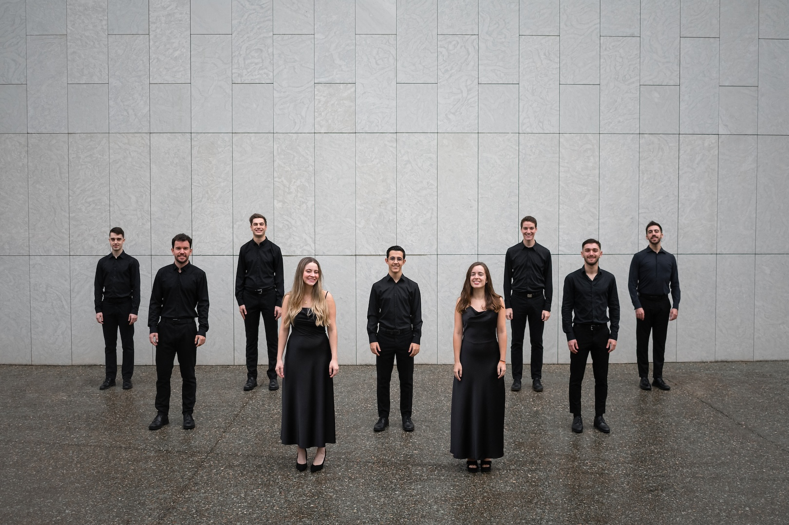
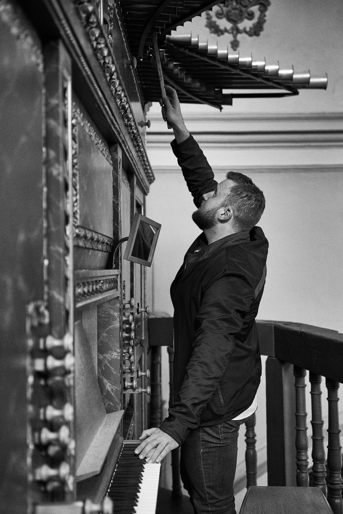

Plenum ensemble y Víctor Mazzili
Unos 50 minutos de música sin interrupción. Se ruega no aplaudir entre movimientos.
Por favor, silencie el móvil y baje el brillo de la pantalla para consultar este programa.
Nacido en 1978, Michael John Trotta es un compositor y director coral estadounidense con una trayectoria muy vinculada a la música vocal, tanto desde la composición como desde la dirección.
Su estilo se caracteriza por combinar la tradición coral y sacra con un lenguaje armónico contemporáneo. Le interesa especialmente escribir música que, sin renunciar a la riqueza musical, resulte accesible y expresiva para los intérpretes y el público.
Compuesta y lanzada al público en 2024, la buena acogida de esta obra demuestra que la música sacra sigue latiendo en pleno siglo XXI.
Tras la emotiva interpretación en marzo de 2026 en Las Palmas de Gran Canaria a mano de la Coral Cantata Del Real Club Victoria, este concierto supone la presentación del Réquiem en la península por primera vez, ofreciendo al público de Zaragoza la oportunidad de escuchar la clásica misa fúnebre revisitada desde el prisma compositivo actual.
Una de las características más interesantes de la composición es el uso de dos motivos melódicos procedentes del canto gregoriano, que aparecen desde el comienzo y van interviniendo a lo largo de toda la obra. Estos motivos funcionan como elementos de cohesión, dando continuidad a los distintos movimientos y creando relaciones musicales entre secciones.
A través de las armonías entrelazadas, unas culminantes, otras rotas, otras disonantes y de ritmos que pueden evocar agitación o calma, Trotta expone todas las caras del tránsito emocional por el duelo, manteniendo en último lugar la esperanza, a la que acude como punto final.
“Existe un instante preciso en el que la pérdida fractura el tiempo: mientras el mundo exterior mantiene su pulso habitual, para quien sufre la ausencia el universo se detiene bruscamente.
Este Réquiem responde a ese vacío y nos invita a recorrer de manera compartida el proceso del duelo, transitando desde la perplejidad inicial y el temor ante lo desconocido hasta la búsqueda serena de refugio y consuelo.
Conforme avanza el discurso sonoro, el dolor comienza a convivir en armonía con el afecto, recordándonos que la ausencia solo nos conmueve en la medida en que la presencia de la persona amada tuvo un significado profundo.
Así, entre disonancias expresivas que anhelan la paz y versos que proclaman el fin de todo llanto, la arquitectura musical nos conduce paulatinamente desde la oscuridad hacia una luz eterna.
Más allá de una obra musical, este concierto se convierte en un espacio de acompañamiento mutuo: un abrazo entre nuestras voces para acoger la memoria de quienes dejaron huella en nuestras vidas. Ante aquello que no podemos cambiar, nos unimos en una sola emoción que honra el recuerdo y nos invita a caminar juntos con esperanza.”

Plenum nace en septiembre de 2023 a raíz del interés de un grupo de jóvenes por indagar en las posibilidades de la música coral para ensemble. Afincados en Zaragoza, está formado por coralistas procedentes de distintos lugares de la península que cuentan con diversa experiencia y formación musical, entre ellos, instrumentistas profesionales, docentes de Música y estudiantes de canto lírico. El ensemble podría asemejarse a un coro de cámara, donde cada voz es protagonista y esencial dentro del conjunto. Actualmente, sus miembros son integrantes en activo de diferentes agrupaciones vocales, como el Coro Ixena de Zaragoza, Coro de la Asociación de las Artes Líricas de Aragón, el Coro Sinfónico de La Rioja, el Joven Coro de Andalucía y el Coro Joven de Aragón.
El ensemble ha recibido formación coral a manos de grandes directores como Lluís Villamajó, Nicole Corti y Mikael Wedar; y formación vocal con profesores como César Polo y Vanesa García. En sus tres años de actividad, Plenum ha participado en numerosos proyectos, colaborando con otras formaciones vocales como Spirito, un prestigioso ensemble francés de 12 voces; Akelarre Abesbatza, coro joven del País Vasco; el Coro Joven de Aragón y el conocido grupo zaragozano B Vocal. Ha realizado diversos conciertos propios en los pueblos de la comarca de Zaragoza, con un repertorio variado desde el Renacimiento español hasta música pop de los años 90, así como colaboraciones en conciertos en la Sala Mozart con otros coros zaragozanos.
La mayoría del repertorio es a capella, aunque también han actuado con instrumentistas, estando abiertos a nuevos formatos grupales. Además, se han encargado de realizar composiciones y arreglos propios adaptados a la peculiaridad de sus voces.
En esta ocasión, la agrupación aborda su primera obra de gran formato como un gran reto, adentrándose en una estrecha conversación con el órgano, cuya simbiosis permite tejer la trama emotiva del concierto y guiar al oyente a través del recuerdo hacia la esperanza.

Formado en el Conservatorio Superior de Música de Aragón, donde cursó los Grados de Dirección y Órgano, es organista titular de la Iglesia de San Miguel de los Navarros y del Monasterio de Santa Lucía. Cuenta con una dilatada trayectoria como acompañante de destacadas agrupaciones corales e instrumentales de la región, destacando su participación al órgano en la interpretación de célebres Réquiems como los de Mozart, Fauré, Jenkins y Rutter en escenarios emblemáticos como el Auditorio de Zaragoza y las catedrales de Sigüenza y Monzón. Asimismo, dirige Bal de l'arte, proyecto musical y pedagógico volcado en la formación instrumental y la creación cultural con un marcado enfoque humanista.
En pro del rigor estilístico y la sensibilidad tímbrica, Víctor concibe la música como un espacio de comunicación, emoción y encuentro humano. Su enfoque artístico busca integrar el órgano en la propia respiración del coro, convirtiendo el sonido, el silencio y el color armónico en un mismo lenguaje expresivo capaz de dialogar con la acústica del templo y la percepción del oyente.
Su destreza al instrumento resulta esencial en este concierto para cimentar la arquitectura sonora de la obra y envolver a las voces en su recorrido hacia la luz.